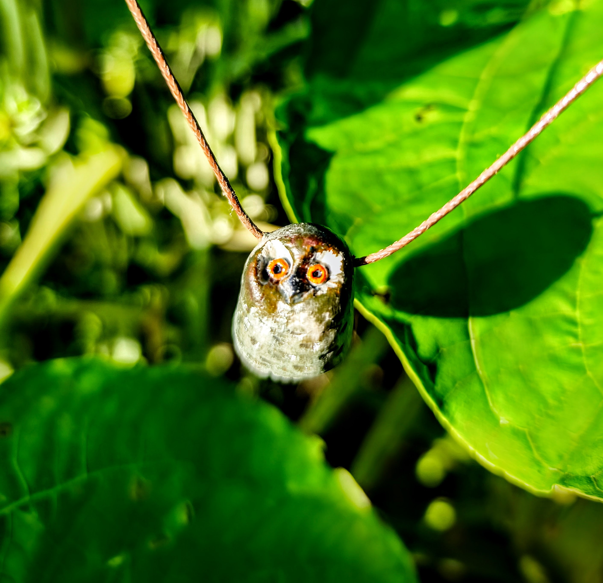
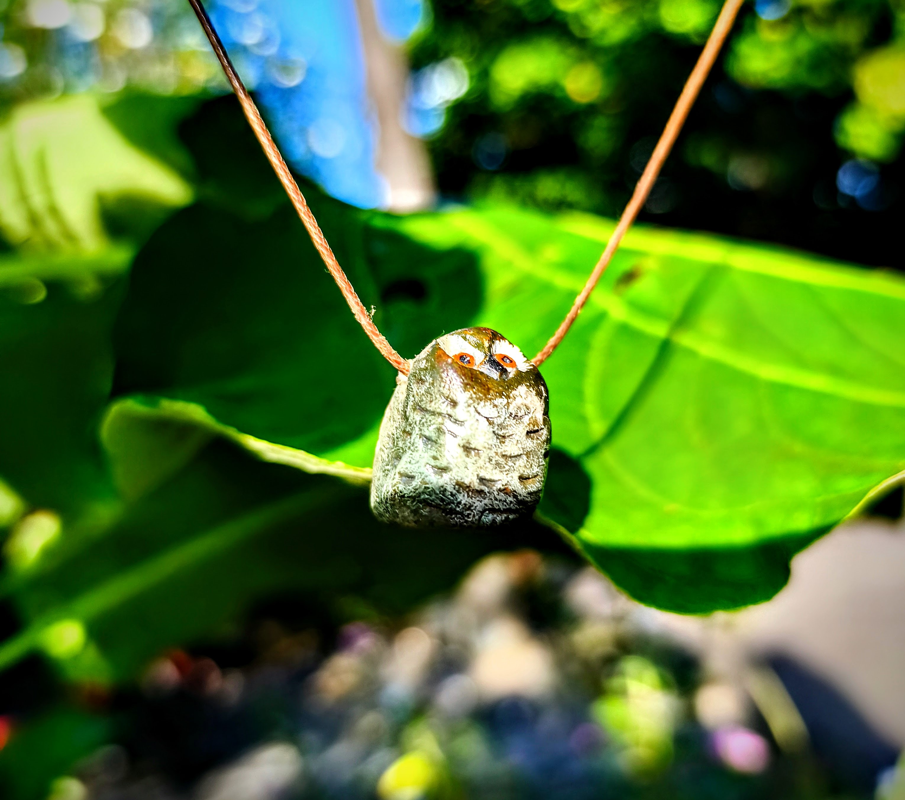
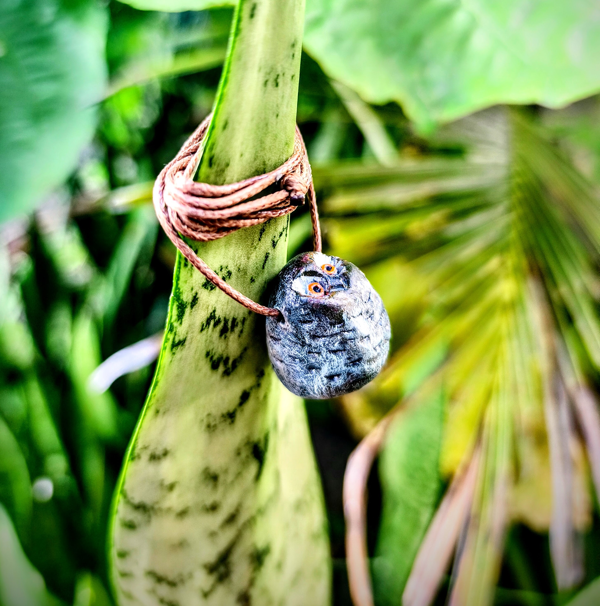

Mais do que um acessório, este cordão carrega a presença silenciosa e profunda da coruja — animal de poder ligado à sabedoria, à intuição e à visão além do óbvio.
Feito artesanalmente à mão, cada peça é única e carrega em si a intenção de conexão com o invisível, com aquilo que não se revela aos olhos apressados.
A coruja, guardiã da noite, nos ensina a enxergar na escuridão e a confiar na própria percepção. Sua presença é discreta, mas profunda: ela observa, silencia, escuta e só então se move.
Este amuleto é ideal para quem busca proteção energética, clareza nos caminhos e fortalecimento da intuição.

Um amuleto para quem deseja caminhar com mais percepção, proteção e conexão interior.
Um olhar frontal da peça, ressaltando sua presença silenciosa e protetora.

A coruja como símbolo de discernimento, observação e visão além do aparente.

Uma peça que conversa com a natureza e com os mistérios guardados no silêncio.
A presença simbólica da coruja favorece recolhimento, observação e defesa sutil do campo energético.
Um amuleto para momentos em que é preciso enxergar além da pressa, do ruído e da confusão.
Ao usá-lo, você se conecta com a energia do discernimento, da escuta interior e da percepção refinada.
“A coruja guarda a noite não com medo, mas com consciência. Ela vê onde os outros não veem.”
Mais do que um objeto bonito, este cordão pode acompanhar práticas espirituais, momentos de introspecção e também o dia a dia, como um lembrete silencioso de proteção, presença e lucidez.
Ele pode ser usado como amuleto pessoal, em rituais, meditações, atendimentos ou sempre que você sentir necessidade de se reconectar com sua própria percepção.
Cada amuleto encontra quem precisa dele em um momento específico. Se você sentiu conexão com a coruja, fale comigo e eu te envio os detalhes.
Falar no WhatsApp